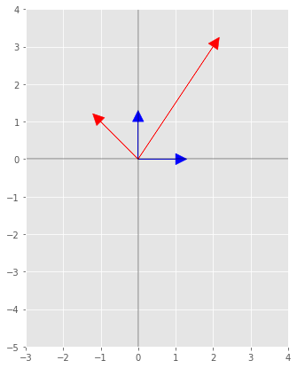

Motivation
I'm always forgetting about the intuition behind the change of basis in linear algebra. There is a very nice video explaining it on Youtube, but I want the explanation in text format so I can easily refer too when in doubt.
Change of basis
Let's say we have two sets of basis vector $\color{blue}{\boldsymbol{b_{i}}}$ and $\color{red}{\boldsymbol{\beta_{i}}}$. The set $\color{blue}{\boldsymbol{b_{i}}}$ defines the original system, the one we start with, and the set $\color{red}{\boldsymbol{\beta_{i}}}$ the transformed system. The $\color{blue}{blue}$ color will be used for original coordinate system and $\color{red}{red}$ for the transformed. The notation with $[]$ will need a subscript to denote which coordinate system it is referring to. In the 2-d space, the basis vectors of the original system can be written as,
\begin{equation} \label{eq:1} \color{blue}{\boldsymbol{b_{1}} = \begin{bmatrix} b_{1x} \\ b_{1y} \end{bmatrix}}_{\color{blue}{b}} \qquad \color{blue}{\boldsymbol{b_{2}} = \begin{bmatrix} b_{2x} \\ b_{2y} \end{bmatrix}}_{\color{blue}{b}} \end{equation}
generally, those will be the classic unit vectors $[1, 0]$ and $[0, 1]$. The basis vector of the transformed space using the coordinate system of the original space are
\begin{equation} \label{eq:2} \color{blue}{\boldsymbol{\beta_{1}} = \begin{bmatrix} \beta_{1x} \\ \beta_{1y} \end{bmatrix}}_{\color{blue}{b}} = \color{blue}{\beta_{1x}} \color{blue}{\boldsymbol{b_1}} + \color{blue}{\beta_{1y}} \color{blue}{\boldsymbol{b_2}} \qquad \color{blue}{\boldsymbol{\beta_{2}} = \begin{bmatrix} \beta_{2x} \\ \beta_{2y} \end{bmatrix}}_{\color{blue}{b}} = \color{blue}{\beta_{2x}} \color{blue}{\boldsymbol{b_1}} + \color{blue}{\beta_{2y}} \color{blue}{\boldsymbol{b_2}} \end{equation}
Given that we know the transformation on the basis vector of the original system we can find $\color{blue}{\beta_{1x}, \beta_{1y}, \beta_{2x}, \beta_{2y}}$.
Now, for any vector $\boldsymbol{v}$ written in the transformed system,
\begin{equation} \label{eq:20} \color{red}{\boldsymbol{v}_{\beta}} = \color{red}{v_{1}} \boldsymbol{\color{red}{\beta_{1}}} + \color{red}{v_{2}} \boldsymbol{\color{red}{\beta_{2}}} = \begin{bmatrix} \color{red}{v_{1}} \\ \color{red}{v_{2}} \end{bmatrix}_{\color{red}{\beta}} \end{equation}
we can transform it by using $\color{blue}{\beta}_{i}$ (the basis vector in the original system), expressed in the previous equation,
\begin{equation} \label{eq:3} \color{blue}{\boldsymbol{v}_{b}} = \color{red}{v_{1}} \boldsymbol{\color{blue}{\beta_{1}}} + \color{red}{v_{2}} \boldsymbol{\color{blue}{\beta_{2}}} \end{equation}
Using the above equation we can define matrix multiplication by,
\begin{equation} \label{eq:5} \color{blue}{\boldsymbol{v}_{{b}}} = \begin{bmatrix} \boldsymbol{\color{blue}{\beta_{1}}} & \boldsymbol{\color{blue}{\beta_{2}}} \end{bmatrix} \begin{bmatrix} \color{red}{v_{1}} \\ \color{red}{v_{2}} \end{bmatrix}_{\color{red}{\beta}} = \begin{bmatrix} \color{blue}{\beta_{1x}} & \color{blue}{\beta_{2x}} \\ \color{blue}{\beta_{1y}} & \color{blue}{\beta_{2y}} \end{bmatrix} \begin{bmatrix} \color{red}{v_{1}} \\ \color{red}{v_{2}} \end{bmatrix}_{\color{red}{\beta}} = \begin{bmatrix} \color{red}{v_{1}} \color{blue}{\beta_{1x}} +\color{red}{v_{2}} \color{blue}{\beta_{2x}} \\ \color{red}{v_{1}} \color{blue}{\beta_{1y}} + \color{red}{v_{2}} \color{blue}{\beta_{2y}} \end{bmatrix}_{\color{blue}{b}} \end{equation}
the matrix product will result in a vector in the original system. The matrix has two columns which are the vectors with the transformed system using the original coordinates. Therefore, the above equation is a transformation from the transformed system to the original system and the transformation matrix $\boldsymbol{Q}$, is given by,
\begin{equation} \label{eq:6} \boldsymbol{Q} = \begin{bmatrix} \color{blue}{\beta_{1x}} & \color{blue}{\beta_{2x}} \\ \color{blue}{\beta_{1y}} & \color{blue}{\beta_{2y}} \end{bmatrix} \end{equation}
If we have the vector in the original coordinate and want it in the transformed system, we have to invert the transformation matrix.
\begin{equation} \label{eq:7} \color{red}{\boldsymbol{v}_{{\beta}}} = \begin{bmatrix} \color{blue}{\beta_{1x}} & \color{blue}{\beta_{2x}} \\ \color{blue}{\beta_{1y}} & \color{blue}{\beta_{2y}} \end{bmatrix}^{-1} \begin{bmatrix} \color{blue}{v_{1}} \\ \color{blue}{v_{2}} \end{bmatrix}_{\color{blue}{b}} \end{equation}
Example
Assuming that $b_{i}$ is the Cartesian system and the new basis is given by,
\begin{equation} \label{eq:9} \beta_{1} = \begin{bmatrix} 2 \\ 3 \end{bmatrix} \qquad \beta_2= \begin{bmatrix} -1 \\ 1 \end{bmatrix} \end{equation}
Those vectors in the Cartesian coordinate system are drawn with
%matplotlib inline
import matplotlib.pyplot as plt
import numpy as np
figsize = [7, 7]
fig, ax = plt.subplots()
b1, b2 = np.array([1, 0]), np.array([0, 1])
β1, β2 = np.array([2, 3]), np.array([-1, 1])
ax.arrow(0, 0, b1[0], b1[1] , fc='b', ec='b', head_width=0.3, head_length=.3)
ax.arrow(0, 0, b2[0], b2[1] , fc='b', ec='b', head_width=0.3, head_length=.3)
ax.arrow(0, 0, β1[0], β1[1] , fc='r', ec='r', head_width=0.3, head_length=.3)
ax.arrow(0, 0, β2[0], β2[1] , fc='r', ec='r', head_width=0.3, head_length=.3)
ax.axis([-3, 4, -5, 4])
ax.set_aspect('equal')
ax.axhline(color='k', alpha=.3)
ax.axvline(color='k', alpha=.3)
fig.set_size_inches(figsize)
The $\boldsymbol{Q}$ matrix can be found with,
Q = np.array([β1, β2]).T
print('Transformed to original system with \n Q={}'.format(Q))Transformed to original system with Q=[[ 2 -1] [ 3 1]]
Let's say we have a vector in the original system $\boldsymbol{v}=[1, -4]$ which in the graph
fig, ax = plt.subplots()
v = np.array([2, -4])
ax.arrow(0, 0, v[0], v[1] , fc='g', ec='g', head_width=0.3, head_length=.3)
ax.arrow(0, 0, v[0]*b1[0], v[0]*b1[1] , fc='b', ec='b', head_width=0.3, head_length=.3)
ax.arrow(0, 0, v[1]*b2[0], v[1]*b2[1] , fc='b', ec='b', head_width=0.3, head_length=.3)
ax.arrow(0, 0, b1[0], b1[1] , fc='b', ec='b', head_width=0.3, head_length=.3, alpha=.2)
ax.arrow(0, 0, b2[0], b2[1] , fc='b', ec='b', head_width=0.3, head_length=.3, alpha=.2)
ax.arrow(0, 0, β1[0], β1[1] , fc='r', ec='r', head_width=0.3, head_length=.3, alpha=.2)
ax.arrow(0, 0, β2[0], β2[1] , fc='r', ec='r', head_width=0.3, head_length=.3, alpha=.2)
ax.axis([-3, 4, -5, 4])
ax.set_aspect('equal')
ax.axhline(color='k', alpha=.3)
ax.axvline(color='k', alpha=.3)
fig.set_size_inches(figsize)
Now we want this vector in the new coordinate system,
v_β = np.linalg.solve(Q, v)
print('The vector in the new coordinates \n v_β={}'.format(v_β))The vector in the new coordinates v_β=[-0.4 -2.8]
plotting this result, which each entry is the scale of the vectors $\boldsymbol{\beta_{1}}$ and $\boldsymbol{\beta_{2}}$.
fig, ax = plt.subplots()
ax.arrow(0, 0, v_β[0]*β1[0], v_β[0]*β1[1] , fc='r', ec='r', head_width=0.3, head_length=.3)
ax.arrow(0, 0, v_β[1]*β2[0], v_β[1]*β2[1] , fc='r', ec='r', head_width=0.3, head_length=.3)
ax.arrow(0, 0, v[0], v[1] , fc='g', ec='g', head_width=0.3, head_length=.3)
ax.arrow(0, 0, b1[0], b1[1] , fc='b', ec='b', head_width=0.3, head_length=.3, alpha=.2)
ax.arrow(0, 0, b2[0], b2[1] , fc='b', ec='b', head_width=0.3, head_length=.3, alpha=.2)
ax.arrow(0, 0, β1[0], β1[1] , fc='r', ec='r', head_width=0.3, head_length=.3, alpha=.2)
ax.arrow(0, 0, β2[0], β2[1] , fc='r', ec='r', head_width=0.3, head_length=.3, alpha=.2)
ax.axis([-3, 4, -5, 4])
ax.set_aspect('equal')
ax.axhline(color='k', alpha=.3)
ax.axvline(color='k', alpha=.3)
fig.set_size_inches(figsize)